A symphony of birds greeted us as we stepped on the path to the wetlands: chaffinches, tits, pigeons and moorhens made themselves heard first, and then it was Sedge Warblers delivering their scratchy songs from trees and reeds. We could hear Common Rosefinches too, but they remained out of sight for a long time... until we found a female singing at the top of a birch! In the meantime, Barnacle and Canada Geese wandered on the mudflats with their newborn chicks, among Caspian Terns and Western Yellow Wagtails. A Marsh Warbler sang for a while in the open, at eye level, letting us appreciate the difficulties of reed warbler identification. A Lesser Spotted Woodpecker jumped from tree to tree while a European Honey Buzzard soared high in the sky. We spotted several more female rosefinches, but it's only at the end that a superb male showed at the top of a shrub. A fine ending for a fine tour!
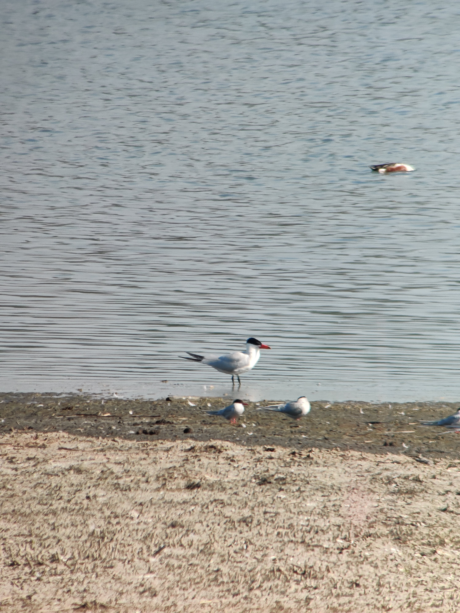
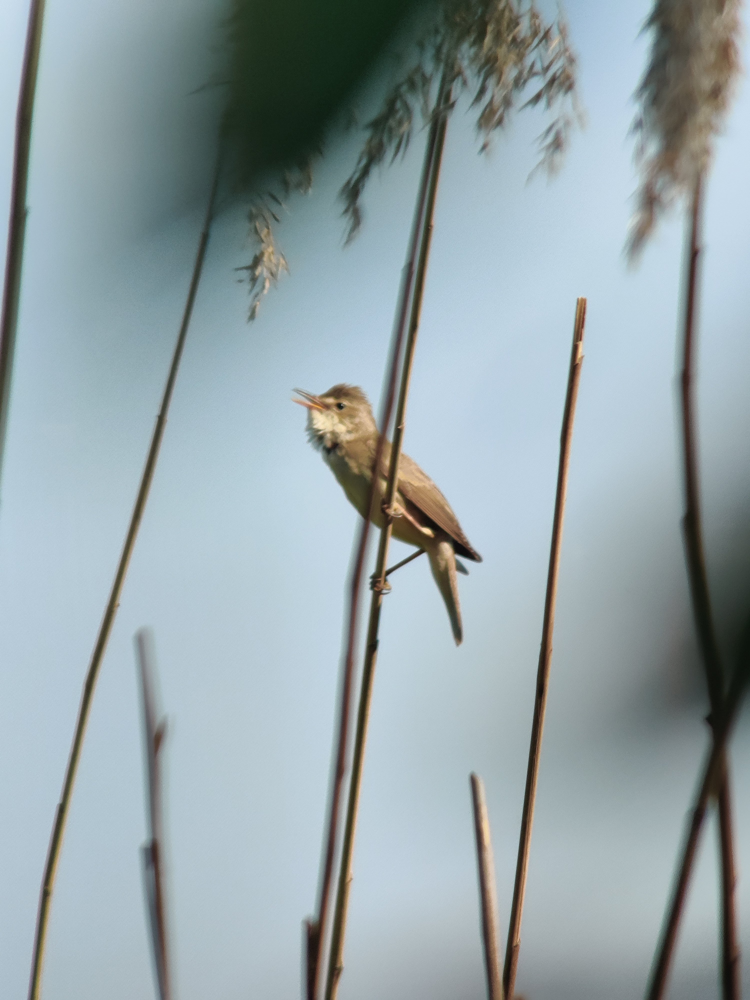
Vanhakaupunginlahti with Nickie and Kevin
The highlight of our outing surely was the Common Rosefinch that time. This gem of a bird, in its stunning dark red outfit, put up a show for us in the reedbed and in the adjacent trees, often belting out its characteristic "pleased to meet you" song. The female wears a more subtle brown, but we got great views of one as it fed on dandelions right in front of us. In the forest, we did a comparative thrush study as a Common Blackbird, a Redwing and a Song Thrush foraged side by side, and in the fields we enjoyed the flight song of the Eurasian Skylark, and the plastic toy squeals of the Northern Lapwings as they chased crows and gulls from their territories.
Vanhakaupunginlahti with Joe and Rebecca
I was delighted to welcome Joe and his mom to Helsinki for the first warm day of the year! The woods were brimming with life, with the first Phylloscopus warblers out in force: finally, Common Chiffchaffs, Willow and Wood Warblers had come back! We even saw two of the latter on the ground, fighting... or was it some sort of violent courting? Whatever they were doing, they let us approach very close. Birding in the forest at this time of year is a joy, because the trees don't have leaves yet. Thus, we admired the warblers but also Tree Pipits and Great Spotted Woodpeckers with no obstruction. There was a lot of activity on the mudflats too, with a group of Ruffs constantly flying left or right, and stunning Western Yellow Wagtails doing exactly the same. The antics of Common Snipes in display above our heads caught our attention, until the local pair of White-tailed Eagles came to their tree. What a sight it was to see those giants slowly glide into view!
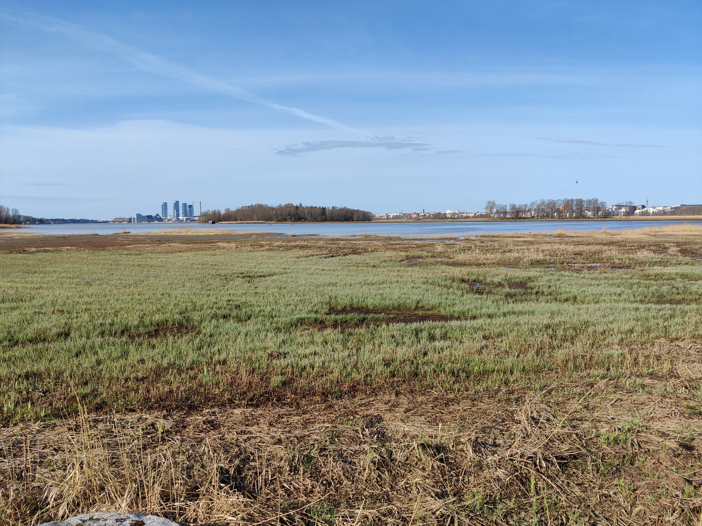
Lauttasaari with Judith
I met Judith at her hotel, and after a walk through a central park that yielded common species but not the Ural Owl that had been spotted in the prior days, we took the metro to Lauttasaari for some coastal birding. Once again I was reminded how beautiful some of our most common birds are, and what a delight it is to have Eurasian Blue Tits, Great Spotted Woodpeckers and Northern Ravens near home! The sea ice was in tatters, and Common Goldeneyes displayed on patches of open water. As we were about to leave, a distant White-tailed Eagle revealed itself. It flew over the sea, once again harassed by crows. Among the ferries, a large group of Long-tailed Ducks practiced synchronized diving. They were far away, but the scope let us enjoy the show nonetheless!
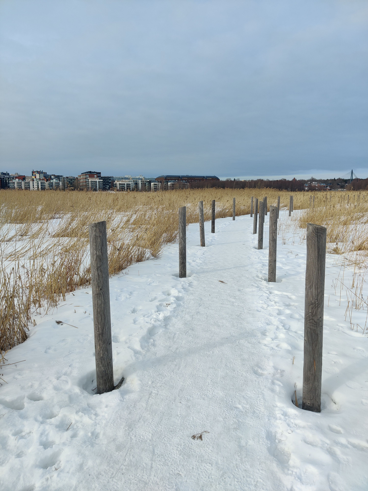
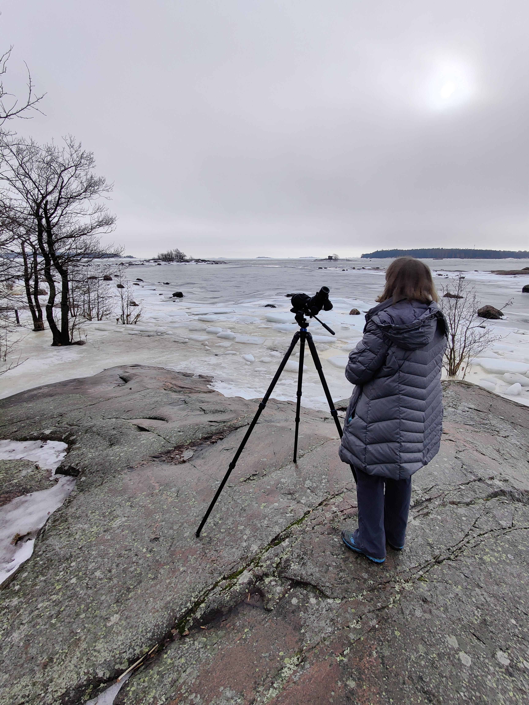
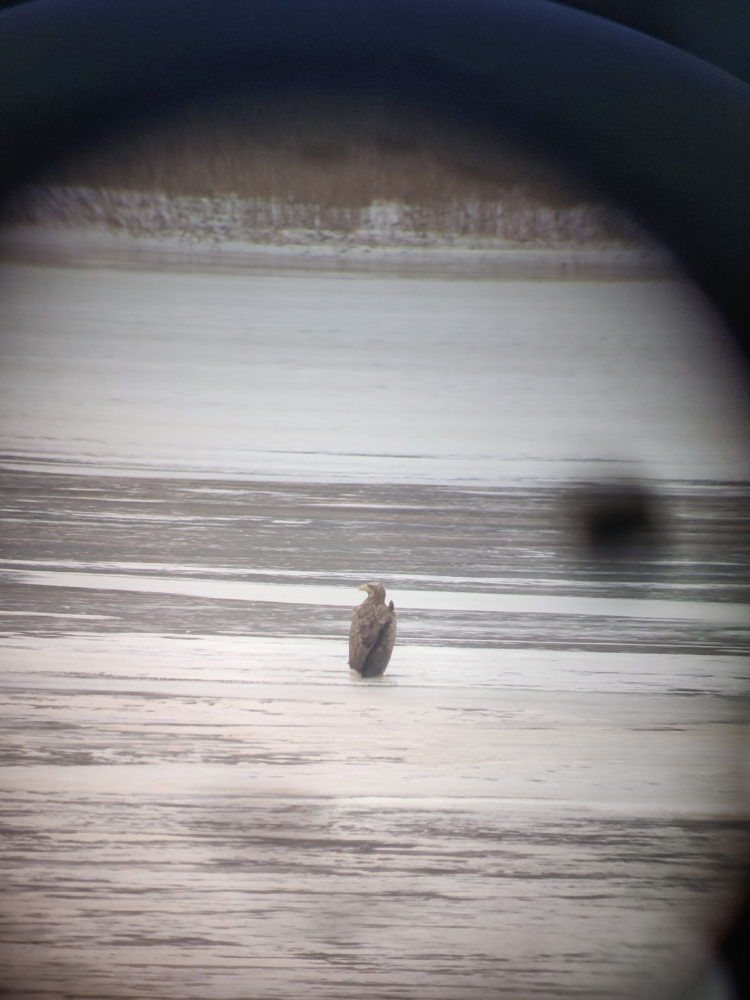
Vanhakaupunginlahti with Alistair
Birding in winter can be a little lackluster, but we are sure to find life around bird feeders... and that's what happened again with Alistair. A flurry of Eurasian Greenfinches, Eurasian Tree Sparrows and European Goldfinches delighted us for a while, with Eurasian Bullfinches playing hard to get by staying on top of the trees. Nearby, a relaxed young Eurasian Sparrowhawk preened on a branch, almost at eye level. The Long-eared Owl I was hoping to find wasn't at home, but a superb Great Grey Shrike hunted on the ice-covered fields, using the fence as a perch. Further away, a majestic White-tailed Eagle sat on the ice while a cheeky Hooded Crow tried to pull feathers from it. What a sight!
Vanhakaupunginlahti with Carole
This time, the weather was rather unpleasant, with constant drizzle and a bit of wind. I had warned Carole, though, and we were all determined to make it a great morning of birding nonetheless. Late autumn brings different birds to Helsinki, and the stars of the show definitely were the Smews, fascinating northern ducks that are regular at that time of year. They gave use great views from the birdtowers. A rare Little Grebe was there too, along with a cohort of Common Ravens. In the forest, we found a bustling group of migrating songbirds that included my first Bramblings of the year but also Yellowhammers and Common Chaffinches. We finished our outing with majestic Whooper Swans quarrelling in the fields.
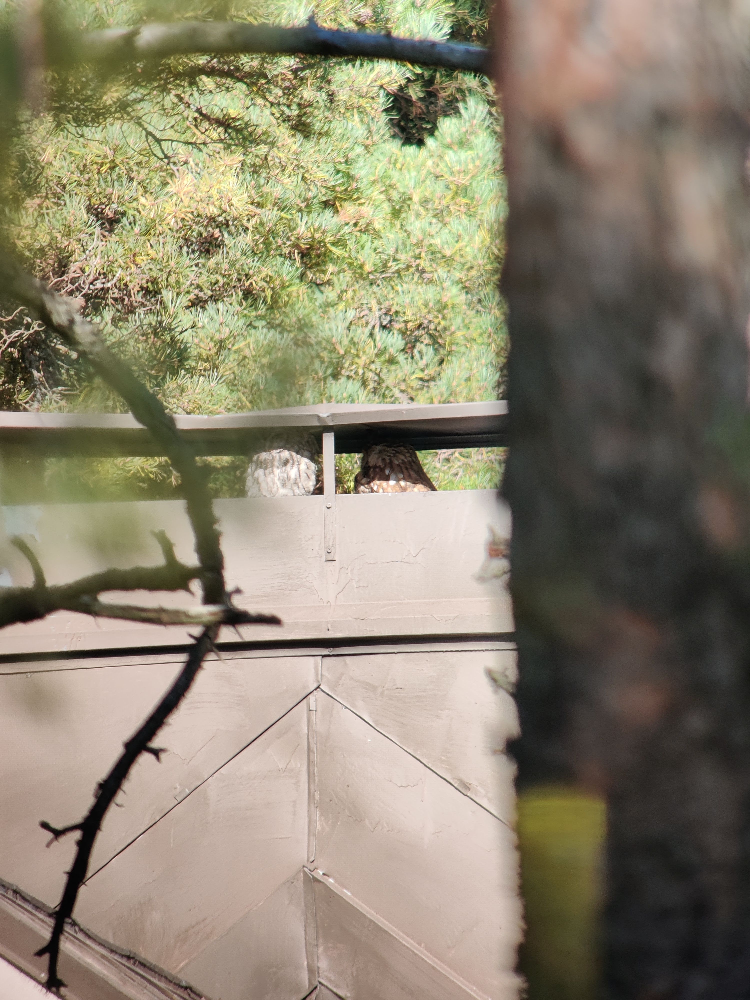
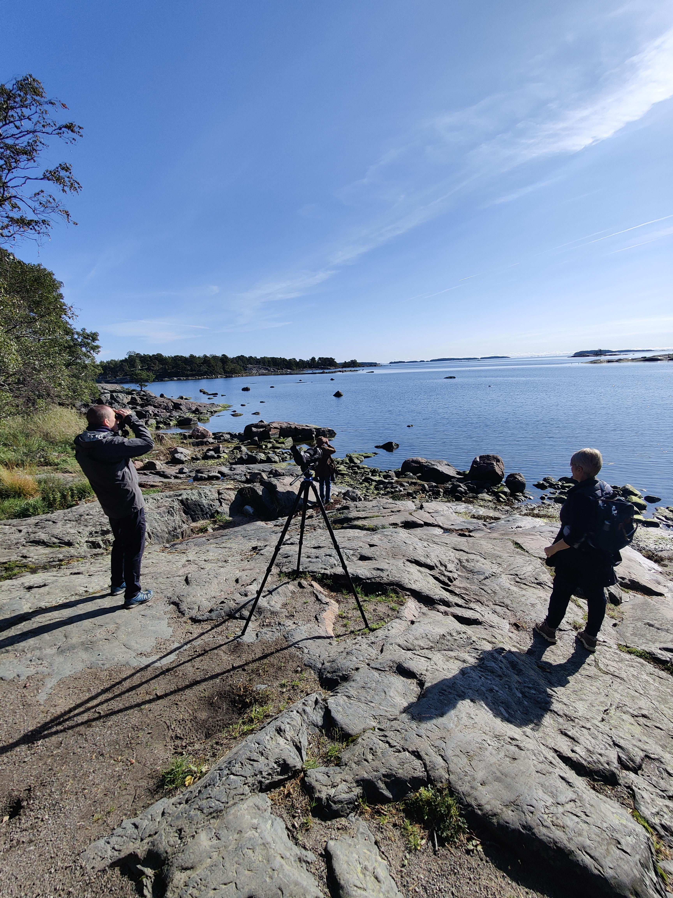
Greater Helsinki tour with Tim, Helen and Patrick
This extended full-day program took us to a variety of places around Helsinki, with Tim at the wheel, searching for specific species. We started in eastern Helsinki, where a distant Greater Scaup stirred a bit of excitement. We also had fantastic views of a group of Goldcrests at eye level - they are usually high in the trees! A pair of Tawny Owls (one rufous, one grey) huddling at the top of a chimney was the icing on the cake. We then moved on to farmlands that were a bit too quiet to my liking, but lunch break proved productive when a Black Woodpecker, one of Patrick's targets, came to perch in a nearby stand of tall spruce. The sparrows even got to enjoy a taste of the cinnamon buns we (momentarily) abandoned on the table in our haste to watch the woody! Later, tens of Common Cranes and Bean geese embodied the wonders of migration time, along with a lone Peregrine Falcon and a putative Pallid Harrier seen from the car.
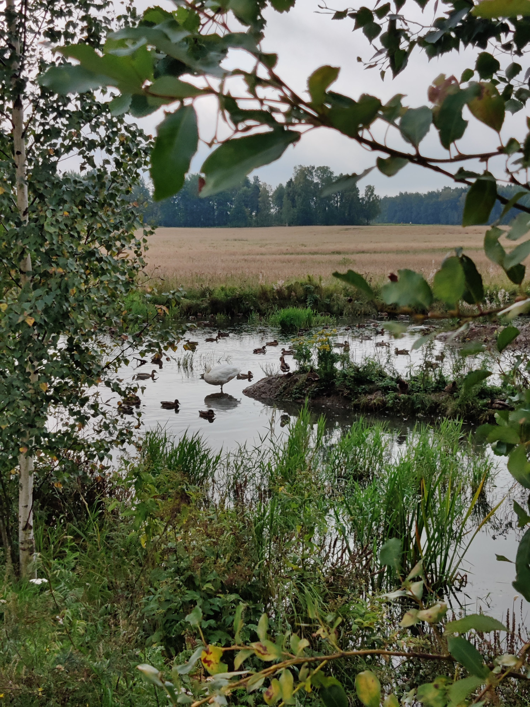
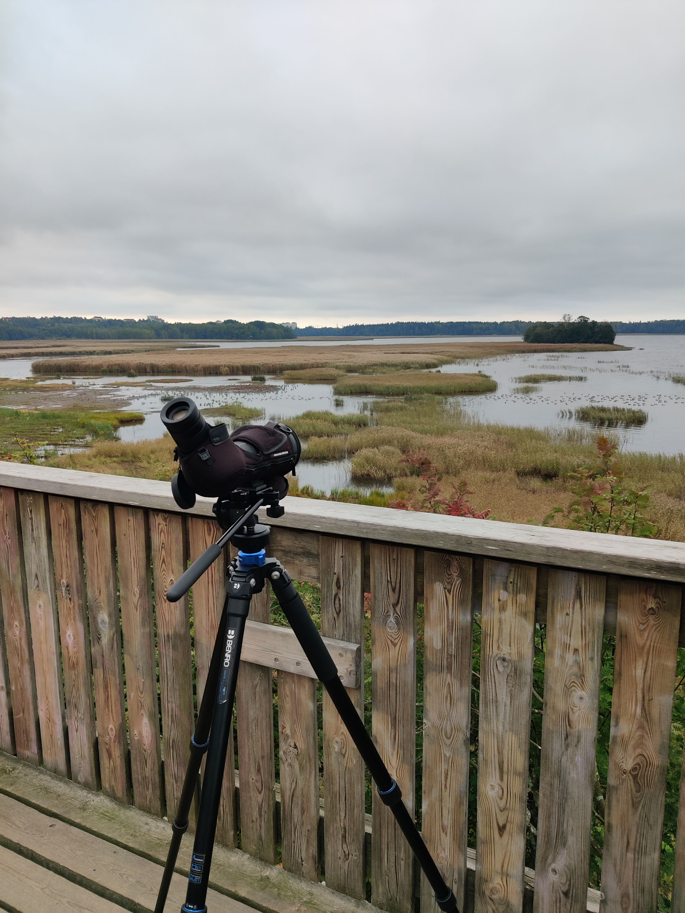
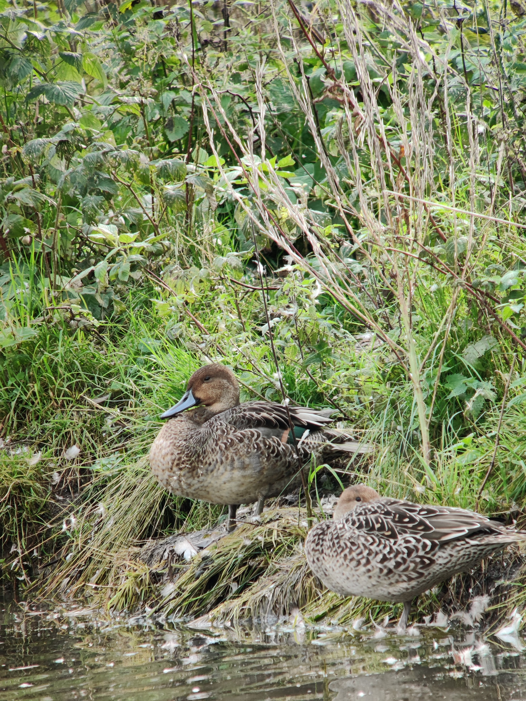
Vanhakaupunginlahti with Mark
It's on a grey but rather warm morning that I met Mark. The wetlands of Vanhakaupunginlahti offered a fantastic range of waterfowl, with all the surface ducks (including Northern Pintail and Northern Shoveler), geese and swans present. It was a bit late in the year for waders, but we still got great views of two Spotted Redshanks, and the sleek Great Egret showed well too. The woodlands were rather quiet, though with a bit of patience we managed fine views of Goldcrests and Northern Wrens, the smallest birds in Europe. We looked for the long-staying Caspian Gull, to no avail, and finished the tour with a gorgeous Goosander near the rapids.
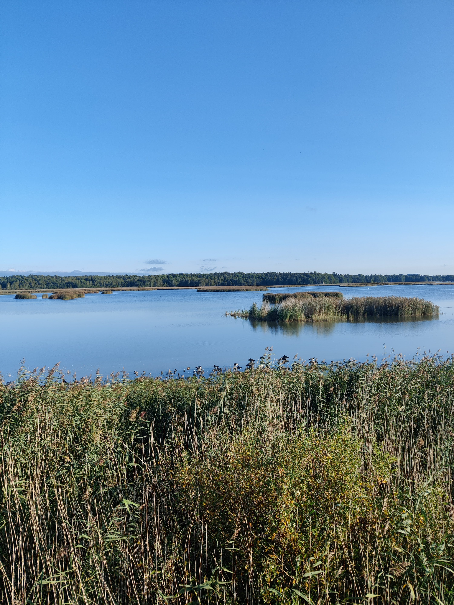
Laajalahti with Nikita
With water levels even higher than a few days before, I feared there would be no wader to show to Nikita from the birdtower... but we were in luck, for a quite a few remained on the emerged land right in front of us, among sleepy Barnacle Geese: Ruffs and Dunlins ran in the mud while Northern Lapwings and Common Snipes offered the fascinating aerial show they are known for. We found migrating Tree Pipits at the edge of the woods, and Western Yellow Wagtails in the fields, and enjoyed the last warblers of the year, including an inobstrusive but attractive Garden Warbler. We finished our tour with the national bird of Finland, the elegant Whooper Swan.
Laajalahti with Jeff
I met Jeff at dawn, and together we ventured into the mists of Laajalahti. Fortunately, it all cleared up as the sun rose, and we were treated to a fantastic assortment of waders. Because the water level was so high, they were all concentrated in a small area, and we had fantastic views of Curlew Sandpipers and Spotted Redshanks, among others. Behind us, young Red-backed Shrikes on migration hunted in the reedbed. As we walked around the bay, enjoying the chatter of countless songbirds, a loud call echoed nearby: it was a Black Woodpecker! It took us a while to spot it, but finally there it was, digging into a tall dead birch. What a spectacular bird! At the end of our tour, a Red Fox in a field and a fast Eurasian Sparrowhawk put a nice final touch to a great morning of birding.